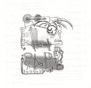

| Artist: | Moron Parade |
| Title: | Heat Slap |
| Label: | self produced |
| Length(s): | 6? minutes |
| Year(s) of release: | 2003 |
| Month of review: | [09/2003] |
| 1) | One Note | 1.38 |
| 2) | Permanente | 3.20 |
| 3) | 2x Twice | 2.42 |
| 4) | Bite My Tongue | 4.15 |
| 5) | Tennis Locum | 1.23 |
| 6) | Mints! | 2.44 |
| 7) | Ans | 5.17 |
| 8) | Feel My Rom | 4.16 |
| 9) | Indie Rock Sunday | 3.25 |
| 10) | Through The Heart | 2.46 |
| 11) | Ec8 | 3.31 |
| 12) | Millions Of Prizes | 2.45 |
| 13) | Pajamas | 1.54 |
| 14) | Riptape | 1.44 |
| 15) | Penelope | 2.46 |
| 16) | Malpractice | 5.57 |
| 17) | Leave Me Alone | 2.17 |
| 18) | Never Done Anything | 3.42 |
| 19) | Eradicate | 2.56 |
| 20) | Understand | 2.05 |
| 21) | Rikshaw | 2.53 |
Ans is a relatively long piece, clocking over five minutes. It opens with atmospheric guitar and bass lines. A low droning, but melodic sound as this song builds up, until the punkrock elements come shining through, well shining, bursting is more like it. Distorted punk rock, but never lacking in melody. Feel My Rom is a bouncy one, with sharp noisy guitar work. The vocals have been vocoded out of recognizability. A weird effect. Indie Rock Sunday has a rather clean opening and low vocals out of which boredom eloquently speaks. Through The Heart has vocal harmonies that do not harmonize very well, on purpose I would imagine. The song ends very low key with synths.
Ec8 is an easy going bouncy track, with the guitar going slow in the beginning. The noise comes after as does the singing. There is something of Kraftwerk in here, Autobahn. Millions Of Prizes brings us back to standard quirky indie rock. Pajamas has subtle strummings of acoustic guitars. The vocal melodies are very recognizable, and it has a kind of warm Christmas like feel. A surprising turn of events. Riptape means the return of punk rock, while Penelope is a low pace melodic piece, with the guitars rambling. The vocals are desperate, a bit in the vein of Red Hot Chili Peppers. Interesting song and good too.
Six more songs to go. Malpractice is the longest one on the album, almost six minutes. The guitar reign on this one, in a varied way. Surprising that this would be an instrumental. Leave Me Alone opens with acoustic guitar, and like Never Done Anything which follows it, is quite low key. The latter of these is quite repetitive with sharp guitar lines throughout.
Eradicate is a strong track, bouncy but instantly recognizable. The vocals are aggressive, the guitar lines repetitive. After Understand we conclude with the up-tempo Rikshaw.